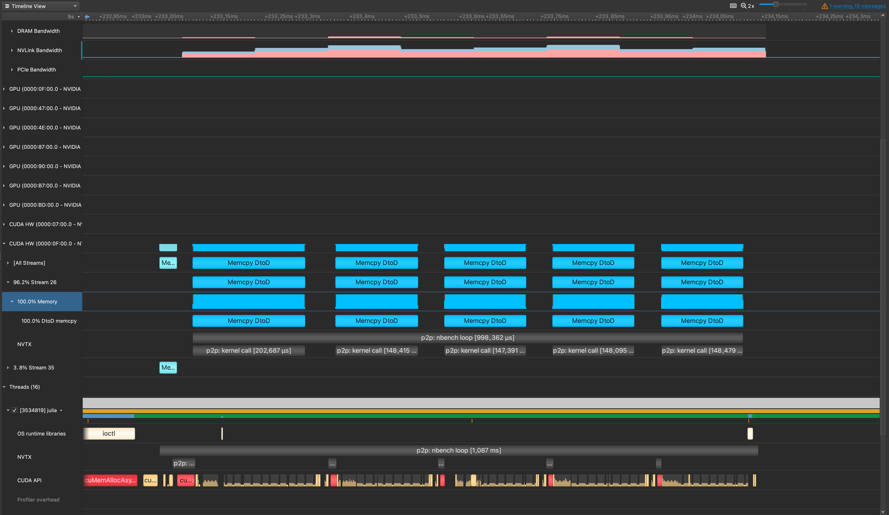
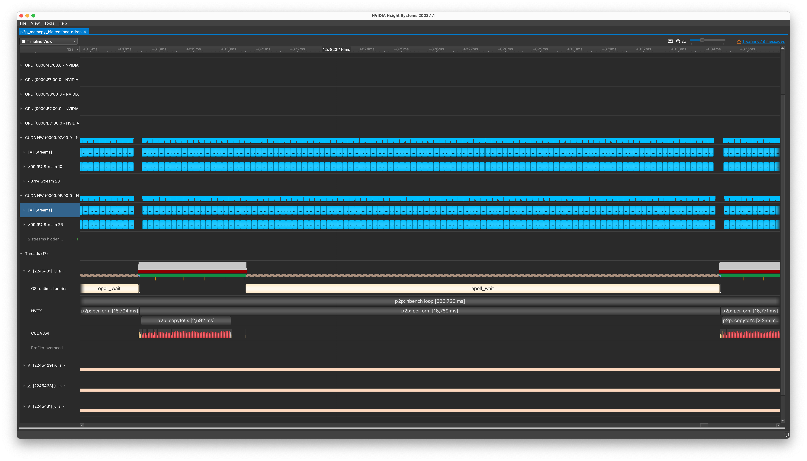

Example: Peer-to-Peer Memcpy
Test system: DGX with 8x A100 GPUs (+ NVSwitch)
Unidirectional
julia> bench_p2p_memcpy();
Memsize: 38.147 MiB
Bandwidth (GiB/s):
├ max: 247.32
├ min: 173.5
├ avg: 229.63
└ std_dev: 31.67
julia> bench_p2p_memcpy_all()
8×8 Matrix{Union{Nothing, Float64}}:
nothing 245.706 241.075 244.467 246.434 242.229 245.085 245.033
239.046 nothing 241.776 243.853 241.626 245.136 244.467 240.379
246.957 242.633 nothing 242.937 245.291 248.114 239.193 242.684
244.724 241.375 244.211 nothing 245.861 238.117 245.085 242.28
241.576 246.329 242.582 245.602 nothing 246.59 240.677 243.343
247.114 240.18 245.965 244.006 236.616 nothing 242.28 244.673
243.802 242.028 248.326 239.933 244.365 245.033 nothing 245.498
245.136 246.904 239.488 243.343 244.057 240.627 243.445 nothingTheoretical maximum should be 25GB/s * 12 = 300GB/s ≈ 279GiB/s.
NVIDIA Nsight Systems profile

Discussions
See this GitHub gist.
Bidirectional
julia> bench_p2p_memcpy_bidirectional();
Memsize: 38.147 MiB
Bandwidth (GiB/s):
├ max: 450.36
├ min: 448.66
├ avg: 449.69
└ std_dev: 0.49julia> bench_p2p_memcpy_bidirectional_all()
8×8 Matrix{Union{Nothing, Float64}}:
nothing 456.631 453.133 454.946 453.67 453.953 455.06 454.662
453.67 nothing 454.01 450.329 455.345 453.02 454.691 455.203
453.981 451.53 nothing 452.344 453.868 454.747 452.232 454.208
453.557 451.979 449.883 nothing 454.01 455.288 450.189 454.691
452.429 454.293 445.094 454.151 nothing 453.472 451.474 453.981
454.89 454.066 453.84 453.84 451.194 nothing 453.274 451.53
453.925 453.02 454.293 456.459 451.839 451.951 nothing 455.032
454.208 416.936 454.265 435.947 452.035 437.836 451.895 nothingTheoretical maximum should be 25GB/s * 12 * 2 = 600GB/s ≈ 559 GiB/s (is this correct?!).
NVIDIA Nsight Systems profile
